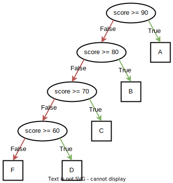
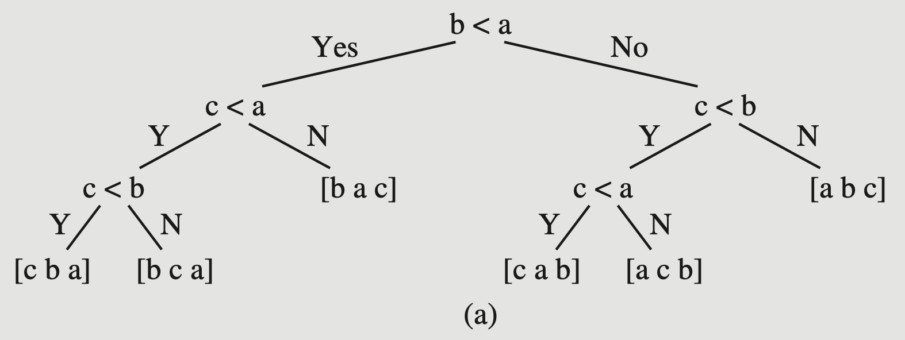
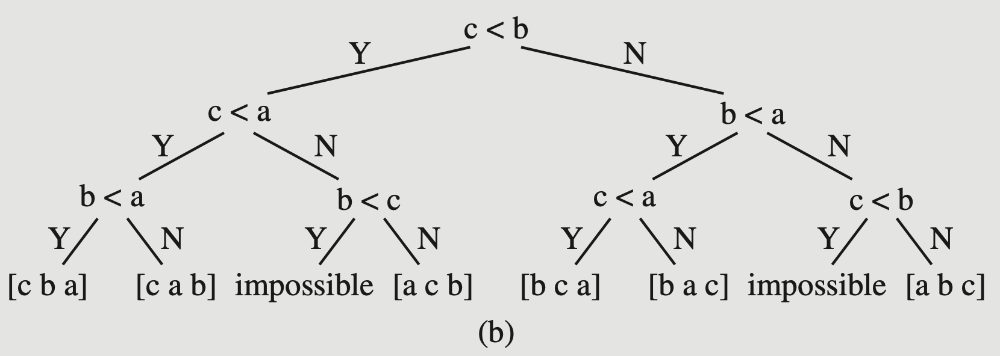

A decision tree is a special form of tree with the following properties:
Every node has either zero or two children.
i.e. they are strict binary trees.
Nodes represent a decision, which is a condition or query on some value in a dataset of interest. The decision must evaluate to a Boolean result.
Edges represent the value of the result from the originating node: either True or False.
(or “yes/no”, or other binary synonym)
Leaf nodes contain a result, which is the value selected by the sequence of decisions represented by the path followed from the root to arrive at the leaf.
Decision Trees: Uses
There are many uses for decision trees as a logical representation. Any problem where a sequence of “questions” or “queries” leads to a final result can be represented as a decision tree. Drozdek (Ch. 9.2) uses the example of a decision tree representing a sorting algorithm.
Evaluating a decision tree is functionally equivalent to executing an “if-else chain” control structure, where each control path is required to eventually produce a value (which may be e.g. “None”) and is not allowed to perform any additional computation beyond the conditional expressions themselves (but these can be arbitrarily complex).
Application areas: Machine learning, data mining, financial analysis, artificial intelligence, business process control, personnel management, … (your imagination is the limit)
Example: Determine letter grade given a score:
Code
// Assume `score` is an integer, // for simplicity.// Assume `grade` is a character // variable that will hold// our result.if( score >=90) grade ='A';elseif( score >=80) grade ='B';elseif( score >=70) grade ='C';elseif( score >=60) grade ='D';else grade ='F';
Decision Tree

A decision tree for a grading scale.
Example: Determine letter grade given a score:
Notice that we could optimize the tree a bit. Here is an alternate version (and corresponding code):
In the book, Drozdek uses the relationship between decision trees and search algorithms for an illustration of theoretical optimal search complexity.
Here is “insertion sort” as one possible decision tree (sorting three values in variables a, b, and c):

Insertion sort as a DT.
Ref: Drozdek, Figure 9.4
How many leaves?
In general for an array of \(n\) elements, there are \(n!\) possible orderings.
That corresponds to at least\(n!\) leaf nodes in the decision tree! There could be more…
Here is a possible decision tree for “Bubble Sort”:

Bubble Sort as a DT.
Ref: Drozdek, Figure 9.4
Notice that there are some impossible states that must still be represented as leaf nodes. (Well, we could optimize this decision tree to remove them, but if you insist on including every decision, there they are.)
So, the total number of leaves in a decision tree representing a sort will be at least\(n!\) (never less).
Given that, what is the optimal height of the tree (which corresponds to the optimal sorting algorithm)?
We know that a complete binary tree with \(k\) leaves contains \(k-1\) interior nodes for a total of \(2k-1\) nodes, and the height of a complete binary tree is \(\lceil \lg(N)\rceil\). We can express that in terms of the leaves alone by saying a complete tree’s height is \(\lg(k) + 1\), or in general (for non-complete but balanced trees) \(\lceil \lg(k) + 1\rceil\).
We know that a complete binary tree with \(k\) leaves contains \(k-1\) interior nodes for a total of \(2k-1\) nodes, and the height of a complete binary tree is \(\lceil \lg(N)\rceil\). We can express that in terms of the leaves alone by saying a complete tree’s height is \(\lg(k) + 1\), or in general (for non-complete but balanced trees) \(\lceil \lg(k) + 1\rceil\).
So what is the height of an decision tree representing an optimal search? There are \(k = n!\) leaves (at least), so it will be at least \(\lg(n!)\) … But what is the log of \(n!\)?
The log of \(n!\) turns out to be \(O(n \lg(n))\).1
So, the best sorting algorithm we could possibly hope for would be \(O(n \lg(n))\).